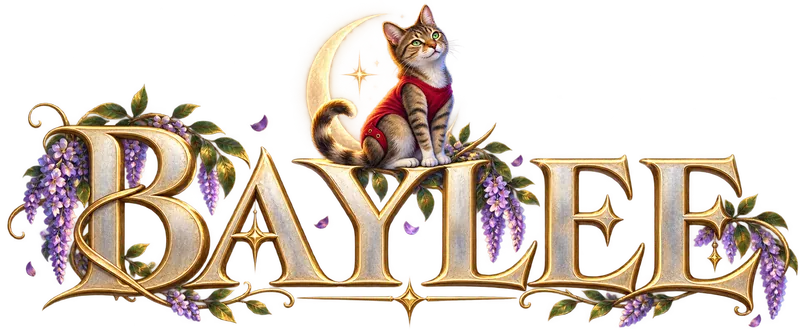

The browser version is taking a short rest.
Die Browser-Version macht eine kurze Pause.
We have closed the web client for now, while the desktop app gets the polish it deserves. It is the same game, free as ever, and it runs best on your own machine: download it for macOS, Windows or Linux and play on.
Wir haben den Web-Client vorerst geschlossen, während die Desktop-App den letzten Schliff bekommt. Es ist dasselbe Spiel, kostenlos wie immer, und es läuft am besten auf deinem eigenen Rechner: lade es für macOS, Windows oder Linux herunter und spiel weiter.
Download BayleeBaylee herunterladen
macOSWindowsLinux
The latest release on GitHub. The builds are not code-signed yet; the install notes explain the first start on Windows and macOS.
Die neueste Version auf GitHub. Die Builds sind noch nicht signiert; die Installationshinweise erklären den ersten Start unter Windows und macOS.
The browser version will be back once the desktop app has settled. Thank you for your patience.
Die Browser-Version kommt zurück, sobald die Desktop-App rund läuft. Danke für deine Geduld.